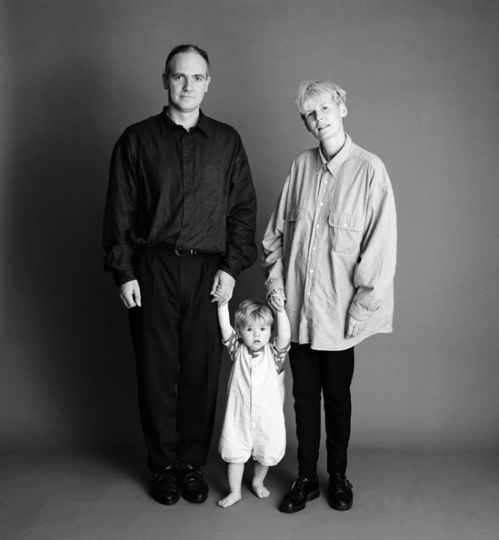
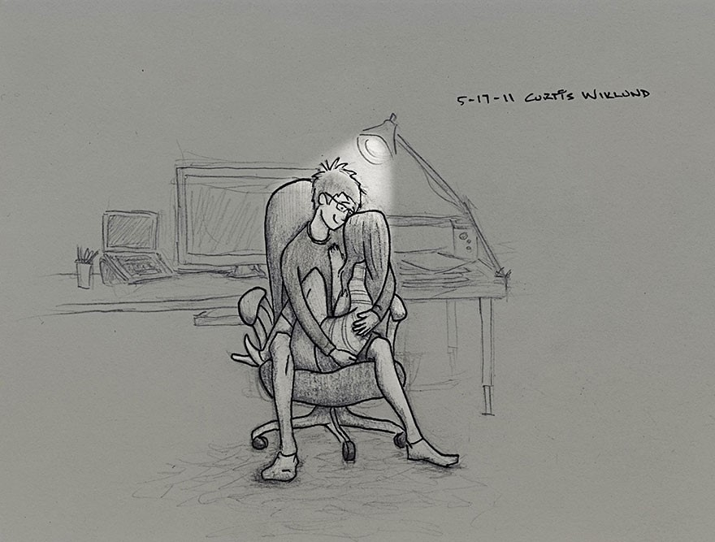

Black and white photograpy • Happy Life Mother, Father, And Son Take The Same Photo For 22 Years 1 year ago by Tomi 2.  pulptastic.com Here I wasn’t able to walk alone. But they hold me to help. My mom was so pretty,still she is, I see why my father fell in love with her.
 Black and white photograpy • Happy Life • Relationships Husband Illustrates Everyday Life with Wife in 16...